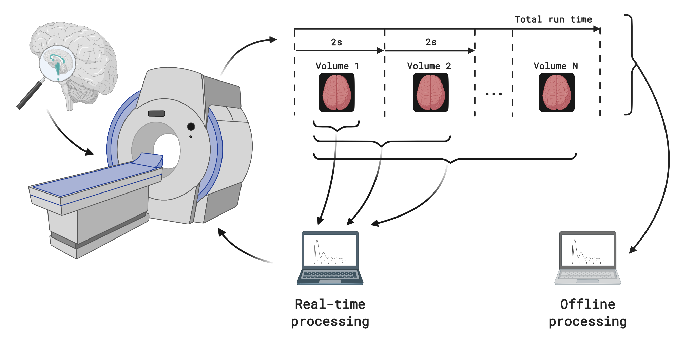

Quality of real-time functional magnetic resonance imaging
Novel software, sequences, and signals
| Stephan Heunis @fMRwhy jsheunis jsheunis.github.io Slides |
|||
| Signal Processing Systems group Department of Electrical Engineering |
|||
The human brain...
...and how we understand it...
...under a magnifying glass
Real-time functional magnetic resonance imaging
Functional MRI

Functional MRI
A statistical map of right-hand finger tapping activityFunctional MRI
- Does not provide real-time information while someone is inside the scanner
- Can result in extra costs and delays if data quality issues are only detected afterwards
- Is biased by sources of noise such as head movement, fluctuating heart rate, and breathing cycles of the person being scanned
Real-time functional MRI

Real-time functional MRI
- Does provide real-time information while someone is inside the scanner
- Can prevent extra costs and delays by detecting data quality issues during the scan
- Is biased by the same sources of noise such as head movement, fluctuating heart rate, and breathing cycles of the person being scanned
Quality of real-time fMRI
Research goals
- Understand real-time fMRI data quality
- Develop hardware and software for real-time fMRI analysis and quality control
- Validate real-time multi-echo fMRI methods
Goal 1: Understand real-time fMRI data quality
- Found few existing methodogical studies
- Developed a comprehensive understanding of real-time fMRI quality
- Identified multi-echo fMRI as promising avenue of research
Goal 1: Understand real-time fMRI data quality
What is multi-echo fMRI?
Goal 1: Understand real-time fMRI data quality
What is multi-echo fMRI?
Goal 2: Develop hardware and software
Output I: Technical implementation of a real-time, multi-echo pipeline on a 3T Philips Achieva scannerGoal 2: Develop hardware and software
Output II: rtQC - a software toolbox for real-time quality control of fMRI dataGoal 2: Develop hardware and software
Output III: fMRwhy - open software pipelines for multi-echo fMRI analysis and quality reportingGoal 3: Validate real-time multi-echo fMRI methods
Output I: rt-me-fMRI - A dataset for real-time, multi-echo fMRI methods development and validationGoal 3: Validate real-time multi-echo fMRI methods
Output II: Real-time sensitivity improvements with rapid T2*-mappingGoal 3: Validate real-time multi-echo fMRI methods
Output II: Real-time sensitivity improvements with rapid T2*-mappingGoal 3: Validate real-time multi-echo fMRI methods
Output II: Real-time sensitivity improvements with rapid T2*-mappingConclusions
- Understand real-time fMRI data quality ✅
- Develop hardware and software for real-time fMRI analysis and quality control ✅
- Validate real-time multi-echo fMRI methods ✅
Summary
- Open real-time multi-echo fMRI dataset, methods and software
- Groundwork laid and invitation put forward for further exploration and collaboration
- Next, let's figure this out together?